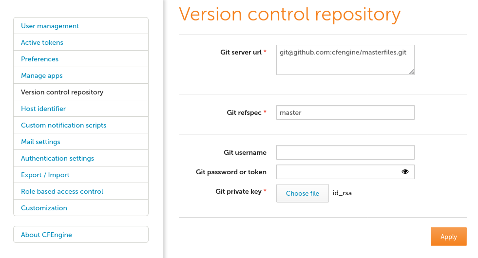

Policy Deployment
By default CFEngine policy is distributed from /var/cfengine/masterfiles on
the policy server. It is common (and recommended) for masterfiles to be backed
with a version control system (VCS) such as Git or subversion. This document
details usage with Git, but the tooling is designed to be flexible and easily
modified to support any upstream versioning system.
CFEngine Enterprise ships with tooling to assist in the automated deployment of
policy from a version control system to /var/cfengine/masterfiles on the hub.
Ensure policy in upstream repository is current
This is critical. When you deploying policy, you will overwrite your current
/var/cfengine/masterfiles. So take the current contents thereof and make sure
they are in the Git repository you chose in the previous step.
For example, if you create a new repository in GitHub by following the
instructions from https://help.github.com/articles/create-a-repo, you can add
the contents of masterfiles to it with the following commands (assuming you
are already in your local repository checkout):
cp -r /var/cfengine/masterfiles/* .
git add *
git commit -m 'Initial masterfiles check in'
git push origin master
Requirements
You must have the following:
- a git URL
- a git refspec
Then one of these combinations: - a git username and password in the case of an ssh-based or git-based URL (no private key required) - a passphrase-less private key (no username or password required) - a github token which is really just a username and password but for github this signifies read-only access (no private key required)
The last option, a read-only login, is the best approach as it removes the possibility of write access if credentials are compromised. All of this information is kept secure by limiting access to root and cfapache users.
Configure the upstream VCS
To configure the upstream repository. You must provide the uri and a refspec (branch name usually). Credentials can be specified in several ways as mentioned above so pick your choice above and enter in only the needed information in the form.
Configuring upstream VCS via Mission Portal
In the Mission Portal VCS integration panel. To access it, click on "Settings" in the top-left menu of the Mission Portal screen, and then select "Version control repository".


Configuring upstream VCS manually
The upstream VCS can be configured manually by modifying
/opt/cfengine/dc-scripts/params.sh
Remember that not all of the values must be specified.
Manually triggering a policy deployment
After the upstream VCS has been configured you can trigger a policy deployment
manually by defining the cfengine_internal_masterfiles_update for a run of the
update policy.
For example:
[root@hub ~]# cf-agent -KIf update.cf --define cfengine_internal_masterfiles_update
info: Executing 'no timeout' ... '/var/cfengine/httpd/htdocs/api/dc-scripts/masterfiles-stage.sh'
info: Command related to promiser '/var/cfengine/httpd/htdocs/api/dc-scripts/masterfiles-stage.sh' returned code defined as promise kept 0
info: Completed execution of '/var/cfengine/httpd/htdocs/api/dc-scripts/masterfiles-stage.sh'
This is useful if you would like more manual control of policy releases.
Configuring automatic policy deployments
To configure automatic deployments simply ensure the
cfengine_internal_masterfiles_update class is defined on your policy hub.
Configuring automatic policy deployments with the augments file
Create def.json in the root of your masterfiles with the following content:
{
"classes": {
"cfengine_internal_masterfiles_update": [ "hub" ]
}
}
Configuring automatic policy deployments with policy
Simply edit bundle common update_def in controls/update_def.cf.
bundle common update_def
{
# ...
classes:
# ...
"cfengine_internal_masterfiles_update" expression => "policy_server";
# ...
}
Troubleshooting policy deployments
Before policy is deployed from the upstream VCS to /var/cfengine/masterfiles
the policy is first validated by the hub. If this validation fails the policy
will not be deployed.
For example:
[root@hub ~]# cf-agent -KIf update.cf --define cfengine_internal_masterfiles_update
info: Executing 'no timeout' ... '/var/cfengine/httpd/htdocs/api/dc-scripts/masterfiles-stage.sh'
error: Command related to promiser '/var/cfengine/httpd/htdocs/api/dc-scripts/masterfiles-stage.sh' returned code defined as promise failed 1
info: Completed execution of '/var/cfengine/httpd/htdocs/api/dc-scripts/masterfiles-stage.sh'
R: Masterfiles deployment failed, for more info see '/var/cfengine/outputs/dc-scripts.log'
error: Method 'cfe_internal_masterfiles_stage' failed in some repairs
error: Method 'cfe_internal_update_from_repository' failed in some repairs
info: Updated '/var/cfengine/inputs/cfe_internal/update/cfe_internal_update_from_repository.cf' from source '/var/cfengine/masterfiles/cfe_internal/update/cfe_internal_update_from_repository.cf' on 'localhost'
Policy deployments are logged to /var/cfengine/outputs/dc-scripts.log. The
logs contain useful information about the failed deployment. For example here I
can see that there is a syntax error in promises.cf near line 14.
[root@prihub ~]# tail -n 5 /var/cfengine/outputs/dc-scripts.log
/opt/cfengine/masterfiles_staging_tmp/promises.cf:14:46: error: Expected ',', wrong input '@(inventory.bundles)'
@(inventory.bundles),
^
error: There are syntax errors in policy files
The staged policies in /opt/cfengine/masterfiles_staging_tmp could not be validated, aborting.: Unknown Error